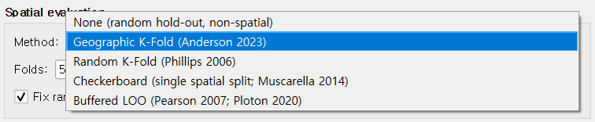

② Parameters tab¶
The Parameters tab controls the modeling and evaluation settings: which Maxent feature classes to allow, the regularization multiplier, the spatial cross-validation method, and where to write outputs. Defaults follow established Maxent practice; this chapter explains what each control does and when to override the default.

Feature Types¶
Maxent's "features" are the basis functions it uses to express the response of suitability to each environmental variable. The five classes (LQPHT) are:
| Feature | Symbol | What it captures |
|---|---|---|
| Linear | bio1 |
Monotonic linear response |
| Quadratic | bio1² |
Optimum-shaped response |
| Hinge | max(0, bio1 - threshold) |
Piecewise linear; very flexible |
| Product | bio1 × bio7 |
Pairwise interactions |
| Threshold | 1[bio1 > threshold] |
Step response |
Auto (recommended)¶
The default. QMaxent uses the maxnet auto-rule — the same rule the R
maxnet package uses — to enable subsets of LQPHT based on the number of
presence points:
| Presence count | Features enabled |
|---|---|
| ≥ 80 | All five (LQPHT) |
| 15–79 | LQH (no Product or Threshold) |
| 10–14 | LQ |
| < 10 | L only |
This conservative scaling prevents overfitting on small datasets. For most studies — including the 116-point Bradypus example — the default is exactly what published practice recommends (Radosavljevic & Anderson 2014).
Manual selection¶
Select Manual selection to enable / disable any combination of LQPHT yourself. Useful when you want to:
- Reproduce another publication that used a specific feature subset.
- Diagnose overfitting: turning off Hinge and Threshold often produces smoother response curves at the cost of some AUC.
- Run sensitivity analyses to understand which feature classes drive your predictions.
Regularization¶
Regularization controls how strongly Maxent shrinks coefficients toward zero — directly trading variance for bias. The multiplier scales the default regularization; values > 1 produce smoother, simpler models, values < 1 fit more closely.
| Multiplier | Effect | When to use |
|---|---|---|
| 0.5 | More flexible, higher AUC, higher overfit risk | Only if you have a strong reason and a large CV-based sanity check |
| 1.0 (default) | Standard Maxent regularization | Most studies |
| 2.0–4.0 | Smoother responses, better extrapolation | Small datasets, projection across wide environmental gradients |
If you are unsure, leave it at 1.0 and check the cross-validated AUC. A much-higher training AUC than CV AUC suggests overfitting and rewards trying a larger multiplier.
Advanced¶
| Control | Default | Notes |
|---|---|---|
| Hinge knots | 50 | Number of knot points for hinge features. Rarely needs changing. |
| Threshold knots | 50 | Same for threshold features. |
| Add presences to background | ✓ on | Following Phillips et al. (2017): including presences in the background sample is statistically the more correct formulation. |
| Down-weight spatially clustered points | off | Enable for surveys with strong spatial sampling bias (e.g. roadside observations). Implements the distance-weight bias correction from Phillips et al. (2009). |
Spatial evaluation¶
This is the single most important academic decision in the dialog: how the model's predictive performance is measured. QMaxent offers five methods.

| Method | Recommended for | Reference |
|---|---|---|
| None | Quick sanity checks only — no held-out evaluation | — |
| Geographic K-Fold (default) | General use; ≥ 25 presences | Anderson 2023 |
| Random K-Fold | Reproducing classic Maxent papers | Phillips 2006 |
| Checkerboard | Single deterministic split with spatial structure | Muscarella 2014 (ENMeval) |
| Buffered LOO | Small datasets (≤ 25 presences) | Pearson 2007; Ploton 2020 |
Why default to Geographic K-Fold rather than Random? When presences are spatially autocorrelated — which is almost always — random folds let training and test points sit next to each other and inflate AUC by a wide margin (Roberts 2017). Geographic folds force test sets to be spatially separated from training sets and yield much more honest performance estimates. See Methodological background for the deeper discussion.
Folds, Grid size, Buffer, Fix random seed¶
These four numeric inputs are conditionally enabled depending on the chosen method:
- Folds: how many splits for K-Fold methods. 5 (default) balances bias and variance for most datasets.
- Grid size: cell size for Checkerboard, in the rasters' units. Match it to the typical separation between presences.
- Buffer: exclusion radius around each held-out presence in Buffered LOO, in metres. 50 km is a sensible default for terrestrial vertebrates; use a finer or coarser value depending on dispersal distance.
- Fix random seed (checkbox + value): enable for reproducibility. QMaxent uses the seed for fold construction and background sampling, so re-running with the same seed gives bitwise-identical results.
Jackknife variable importance¶
When checked, QMaxent computes the standard Maxent jackknife: for each variable it fits two extra models (with only that variable, and without that variable) and reports the resulting AUCs. This produces the characteristic per-variable bar plot (see ④ Results tab) and adds a Jackknife sheet to the results XLSX.
For models with many variables this multiplies training time roughly by
2 × (number of variables) + 1, but for the typical case of < 15 variables
the extra cost is small enough that we leave it on by default.
Output Files¶
Two files are written when you run the model:
- Model (.pkl): the serialized trained Maxent model (the elapid
MaxentModelinstance via Python pickle). Reload it from the ① Data tab. See Saving and reusing models for the security note on pickle. - Results XLSX: a multi-sheet Excel workbook capturing experimental setup, variable inventory, cross-validation results, jackknife importance, and (if you run priority sites) the survey-planning output. Format follows the academic-paper Supplementary Table convention. See Exporting results.
Both paths default to a qmaxent_output folder under your home directory,
but you can browse to any writeable location.